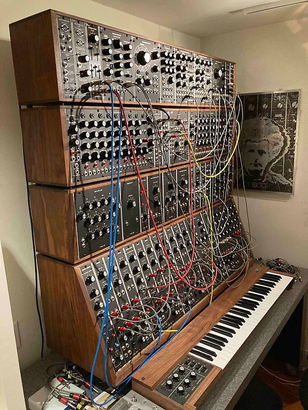

Los primeros inventores
La creación de los sintetizadores surgió gracias a científicos e ingenieros interesados en transformar señales eléctricas en sonido.
Durante el siglo XX comenzaron a aparecer instrumentos electrónicos experimentales capaces de generar frecuencias y modificar ondas sonoras.
Robert Moog y la revolución analógica
En la década de 1960, Robert Moog desarrolló uno de los primeros sintetizadores modulares accesibles para músicos.
Su sistema utilizaba módulos separados conectados mediante cables, permitiendo controlar osciladores, filtros y envolventes.
Sintetizadores Modulares

La síntesis sonora
Los sintetizadores funcionan creando ondas básicas como seno, cuadrada o triangular, que luego son modificadas para construir nuevos sonidos.
Este proceso permitió crear sonidos imposibles de obtener con instrumentos tradicionales.
Del laboratorio al escenario
Con el tiempo, los sintetizadores dejaron de ser herramientas exclusivas de investigación y comenzaron a utilizarse en conciertos y estudios.
Bandas de rock progresivo, música electrónica y pop impulsaron su popularidad mundial.